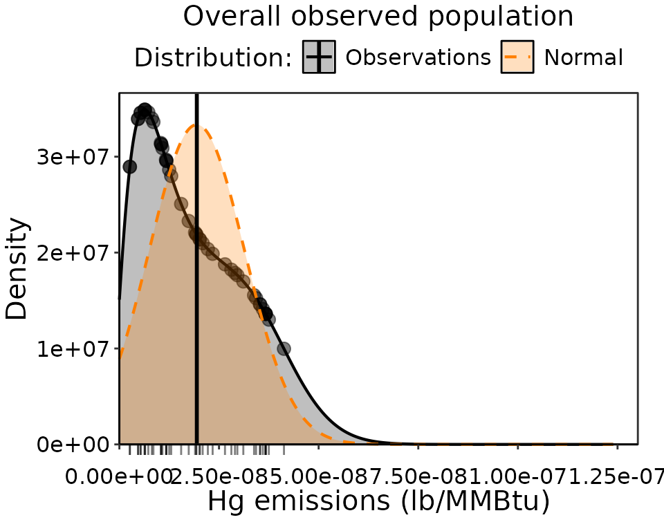
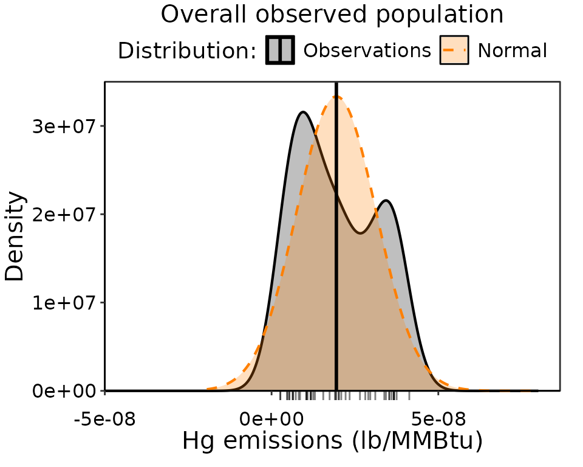
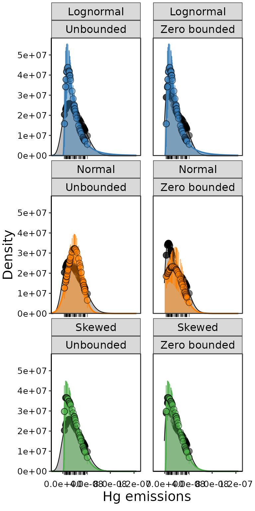

Introduction
There are two families of UPL methods included in the
UPLforOAR package: those replicating the functionality of
the Excel workbook in the frequentist framework,
(distribution_type(), Normal_UPL(),
Lognormal_UPL(), and Skewed_UPL()) and those
using fitted likelihood distributions in the Bayesian framework
(Bayesian_UPL()). The UPL is the same MACT floor limit in
principle, with these two families of methods simply being different
ways of arriving at the same answer. However, there are differences
worth explaining, pros and cons, and circumstances where the frequentist
and Bayesian methods will get different UPL estimates.
Frequentist
The UPL for Normal data is well-suited to the frequentist framework
because it can be calculated analytically using the mean, standard
deviation, and t-statistic of the emissions data. However,
there are no equivalent analytical solutions for Skewed or Lognormal UPL
calculations. Instead, Lognormal_UPL() uses a Gram-Charlier
Type A Series expansion to approximate the density distribution and
determine the arithmetic mean of future samples, and
Skewed_UPL() uses the skewness and kurtosis moments to
iteratively adjust the t-statistic until the desired
significance is achieved. All three UPL methods assume the distribution
explicitly and without uncertainty, and assume the emissions are
observed perfectly and independently. This means that the parameters
defining the probability distributions from which the UPL is derived are
fixed point estimates. For example, any uncertainty around the mean of
emissions in normally distributed data does not carry through
to the UPL estimate. Furthermore, if there are circumstances where we
don’t want to assume all test runs are independent, we want to
incorporate additional sources of variance, or perhaps use individual
test run uncertainty, then it will be very difficult if not impossible
to accommodate in these methods. However, these formulas are very quick
to use, have no stochastic components, and have been in use a long
time.
Bayesian
In contrast, the UPL is estimated the same way regardless of the
distribution in the Bayesian approach. In this method we use Bayesian
MCMC to fit a likelihood distribution to the emissions data. The results
of this include posterior distributions, which contain a full
probability around your result rather than a fixed point estimate. That
means the UPL for a normal distribution is based on full posterior
distribution of the mean and standard deviation, rather than fixed point
estimates of the mean and standard deviation. This gives us much better
quantification of uncertainty in how well the distribution represents
the data. While we could still use the ratios of skewness and kurtosis
implemented in distribution_type() to pick the distribution
to use, we can do better in the Bayesian framework. Those ratios only
tell us if the data are approximately Normal or Lognormal, and are
assigned as Skewed for any other outcome. But can use many more types of
distributions with Bayes that we will want to pick between. With the
Bayesian_UPL() function, we have several ways to
quantitatively and qualitatively asses the best fit distribution. Rather
than assuming the distribution is correct implicitly, we can evaluate
how well the parameters converged, which is another method by which we
can reject bad choices for distributions.
The biggest advantage in using a Bayesian approach are the expanded
options for distributions, such as Beta and Gamma which are already
implemented in Bayesian_UPL(). Most emissions data are
bounded by zero, and in some circumstances have upper bounds as well.
Bounded data can be accommodated both by picking an appropriate
distribution and by explicitly truncating the likelihood distribution.
More nuanced situations, such as non-independent test run data,
additional sources of variance, or individual test run uncertainty, can
easily be incorporated into the Bayesian approach without changing the
underlying methods of calculating the UPL. The main draw back is in the
difficulty of implementing the method. The Markov Chain Monte Carlo
(MCMC) Gibbs sampler takes longer than a simple analytical solution.
Since there are fewer assumptions, there are more steps to ensure the
likelihood model worked well and is appropriate to the data. There is a
stochastic component due to the way the MCMC sampler searches for the
parameter solutions. While this shouldn’t have a meaningful effect on
the outcome and can be controlled to create reproducible results, it is
a factor influencing different outcomes that might be undesirable.
Lastly, the Bayesian method uses prior information. While in many
situations this can be a strength in the method, here we generally want
completely uninformative priors for UPL calculations. We very much want
to avoid a situation where we think the prior is uninformative, but in
fact it is not.
For more details on Bayesian_UPL() see the example and
details at Bayesian
UPL.
Example Comparison
We are going to calculate the UPL from emissions data using multiple
methods and compare the outcomes. This example uses Hg emissions data
from the recent EPA
rule-making NESHAP for Coal- and Oil-fired Electric Utility Steam
Generating Units. First we load and organize the data into
emissions and sources, then select the top
performers to use for the UPL calculations. We are only going to be
considering the existing source data set since it does not include
multiple runs per source.
dat_emiss = read_csv("./../man/data_example/MATS_Hg.csv", col_names = TRUE)
dat_emiss$sources = paste0(dat_emiss$`Plant Name`, "_", dat_emiss$`Unit Number`,
"_", dat_emiss$boiler_id)
dat_emiss$emissions = dat_emiss$Mercury_min_lb_MMBtu
dat_emiss = subset(dat_emiss, select = c(sources, emissions))
dat_exist = MACT_existing(CAA_section=112, dat_emiss)
dat_exist_avg = dat_exist %>% group_by(sources) %>%
summarize(avg = mean(emissions), counts = n())
dat_exist_avg = arrange(dat_exist_avg, avg)
distribution_result_exist = distribution_type(dat_exist)The skewness and kurtosis ratio tests tell us the distribution is Normal. However, looking at plot of the data it is clear that the Normal (in orange) doesn’t actually fit well (Fig. 1). This is because those ratio tests do not account for zero as a lower boundary.

Observation density of Hg for the overall population. The obseration data are indicated in black as points and a rug along the axis, with the observation density distribution as a black line. The fitted normal distribution that is the basis of the UPL estimate is colored orange, with a zero lower boundary. The average of the Hg emissions is the vertical black line.
We can recreate this plot without the zero boundary for the density. Notice that the Normal distribution a lot looks more reasonable when we allow the left tails to extend a bit below zero, and things become symmetric (Fig. 2). This is unrealistic, since we know we cannot have negative emissions. However, we cannot account for boundaries in the analytical normal UPL calculation. In the Bayesian framework, we can explore both bounded and unbounded normal distributions.

Observation density of Hg for the overall population. The obseration data are indicated in black as points and a rug along the axis, with the observation density distribution as a black line. The fitted normal distribution that is the basis of the UPL estimate is colored orange, without boundaries. The average of the Hg emissions is the vertical black line.
Ignoring the best distribution for the moment, we are going to calculate the UPL using the frequentist methods, the Bayesian methods unbounded, and the Bayesian methods bounded, for the Normal, Lognormal, and Skewed distributions. We are using 1 for the number of future runs, since the data here are already averages of 3 runs.
UPL_freq_N = Normal_UPL(data = dat_exist,
future_runs = 1,
significance = 0.99)
UPL_freq_LN = Lognormal_UPL(data = dat_exist,
future_runs = 1,
significance = 0.99)
UPL_freq_SN = Skewed_UPL(data = dat_exist,
future_runs = 1,
significance = 0.99)
Bayes_0bounded = Bayesian_UPL(distr_list = c("Normal", "Lognormal", "Skewed"),
data = dat_exist, minY = 0,
future_runs = 1, significance = 0.99)
Bayes_unbounded = Bayesian_UPL(distr_list = c("Normal", "Lognormal", "Skewed"),
data = dat_exist,
minY = -mean(dat_exist$emissions),
future_runs = 1, significance = 0.99)
Fitted likelihood distributions for zero bounded (right) and unbounded (left) Bayes distributions. The fitted distributions are colored blue for lognormal, orange for normal, and green for skewed.
All six of the Bayesian distributions converged. When it comes to the goodness-of-fit metrics, the best distribution was Skewed for both Bayes bounded and unbounded, with the zero bounded being the best overall. The Normal distribution did have the most points within 95% CI, but had the worst fit when zero-bounded and did not integrate to 1.
| Distribution | SSE | No. Obs. in 95% CI | integral | Type |
|---|---|---|---|---|
| Normal | 1.64e+15 | 25 | 0.9882714 | Unbounded |
| Skewed | 2.58e+15 | 18 | 0.9935676 | Unbounded |
| Lognormal | 5.03e+15 | 15 | 0.9834525 | Unbounded |
| Skewed | 5.64e+14 | 26 | 0.9935547 | Zero bounded |
| Lognormal | 2.38e+15 | 22 | 0.9834547 | Zero bounded |
| Normal | 2.90e+15 | 30 | 0.7560464 | Zero bounded |
But we aren’t interested in finding the best distribution in this exercise (it is probably a Gamma distribution anyways), just comparing UPL methods. The Lognormal doesn’t change between bounded and unbounded Bayesian methods. That’s because it already is strictly positive. The frequentist Lognormal result is similar but not the same, but it uses an approximation that is not replicated in the Bayesian method that isn’t unexpected. All Lognormal results are similarly larger than all others, which is typical for the long-tailed distribution. The Skewed changes a little with the zero boundary, since it isn’t strictly positive but is asymmetric. It changes a similar amount with the frequentist method, which again is an approximation, and not actually the 99 percentile of a skew-normal distribution. The unbounded Bayesian and frequentist UPL’s for the Normal distribution are very similar to one another. Since the frequentist method has an exact analytical solution, we should be aiming to arrive at the same values with the Bayesian method, excepting the stochastic component and added accountability to uncertainty. The zero-bounded Bayesian Normal UPL is quite different, since we are essentially fitting a partial Normal.
| Distribution | Method | UPL |
|---|---|---|
| Lognormal | Frequentist | 8.48e-08 |
| Lognormal | Unbounded | 9.22e-08 |
| Lognormal | Zero bounded | 9.22e-08 |
| Normal | Frequentist | 4.86e-08 |
| Normal | Unbounded | 4.94e-08 |
| Normal | Zero bounded | 5.58e-08 |
| Skewed | Frequentist | 4.82e-08 |
| Skewed | Unbounded | 4.35e-08 |
| Skewed | Zero bounded | 4.00e-08 |
The next logical question is how much does the UPL change if we use
different random seeds when starting the MCMC iterations? We can explore
this be re-running distribution fits with random = TRUE.
These results will not be exactly reproducible. We will fit
three sets of unbounded Normal distributions with identical inputs, but
allowing the random seeds to change.
Bayes_random1 = Bayesian_UPL(distr_list = c("Normal"),
data = dat_exist, random = TRUE,
minY = -mean(dat_exist$emissions),
future_runs = 1, significance = 0.99)
Bayes_random2 = Bayesian_UPL(distr_list = c("Normal"),
data = dat_exist, random = TRUE,
minY = -mean(dat_exist$emissions),
future_runs = 1, significance = 0.99)
Bayes_random3 = Bayesian_UPL(distr_list = c("Normal"),
data = dat_exist, random = TRUE,
minY = -mean(dat_exist$emissions),
future_runs = 1, significance = 0.99)Looking at the UPL results, we do see some variance in the UPL, but it is much smaller than the difference between approximation methods and distributions. The standard deviation in these 4 repeated UPL results is 1.54^{-10} which is similar to the difference between the Bayesian and frequentist Normal UPL’s. It is worth pointing out that the more uncertainty in the fit, the more the stochastic component might affect the UPL results. This likely only a concern when the model struggles to converge because it is a poor fit or because there are not enough data.
| Type | UPL |
|---|---|
| Fixed | 4.938e-08 |
| Random 1 | 4.905e-08 |
| Random 2 | 4.922e-08 |
| Random 3 | 4.908e-08 |